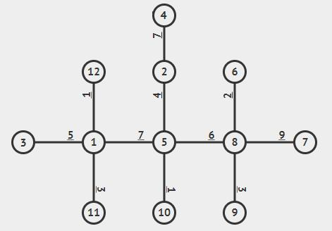

Illustration of the Nation of Bollyjee (Black represents metropolitan cities. Red represents commune cities. Yellow represents industrial cities.)
Bollyjee is an island nation (a nation which its whole territory is within one island and that one island is claimed by only that nation) in the Pacific. This nation is composed of $$$N$$$ cities which all have their purpose, depending on the production output of that city. During the early days when Bollyjee was built, the government decided to establish industrial cities along the coast of the island, metropolitan cities in the center of the island (cities which are connected with more than two other cities and there exist exactly $$$K$$$ metropolitan cities), and the rest are commune cities (places where the citizens live).
Illustration of the Nation of Bollyjee (Black represents metropolitan cities. Red
represents commune cities. Yellow represents industrial cities.)
Because Bollyjee is a developing nation (a nation that just achieved independence and is still in the developing phase), Bollyjee still hasn't acquired means of transportations to travel between towns. Due to that, President Maxi decided to build a railway system by constructing $$$N - 1$$$ bidirectional connecting rails between cities. After running a discussion with the ministers and experts, the President decided to design a railway system by following the steps below:
1. Connect all metropolitan cities with $$$K - 1$$$ rails.
2. Connect each commune city with either metropolitan cities or other commune cities which
have been connected only once.
3. Connect each industrial city with either metropolitan cities or other commune cities
which have been connected.
4. Transportation cost between cities is calculated by the sum of "travel cost" of each
traversed rail.
5. "Travel cost" is the required amount of money to be paid when traversing a rail connecting city $$$U$$$ and city $$$V$$$.

Illustration of the Nation of Bollyjee with a finished railway system.
After the completion of the railway system, President Maxi set the "travel cost" for each rail. However, the cost set by the President is considered an experimental cost that can change from time to time. Therefore, at some point the "travel cost" can be increased by $$$C$$$. To prevent the cost from being too expensive, the president decided to not adjust the prices of "travel cost" between two metropolitan cities.
Hearing that, Jelix Fingga, a businessman, wants to know the transportation costs of raw materials between industrial city $$$U$$$ and industrial city $$$V$$$ so that his factory could continue production. As a professional consultant and friend of Jelix Fingga, you are requested to help him perform the calculation.
Input starts with an integer $$$T$$$ — the number of test cases.
Each test case starts with two integers $$$N$$$ and $$$Q$$$, denoting the number of cities and the number of questions asked by Jelix Fingga respectively. The next line consists of $$$N - 1$$$ integers, in which the $$$i$$$-th integer is $$$P_i$$$ ($$$2 \le i \le N$$$), indicating a rail between city $$$i$$$ and $$$P_i$$$. Then followed by a line containing $$$N - 1$$$ integers, in which the $$$i$$$-th integer is $$$\textrm{Val}_i$$$ ($$$2 \le i \le N$$$), representing the "travel cost" of the rail connecting city $$$i$$$ and city $$$P_i$$$.
The next $$$Q$$$ lines are each filled with three integers. There are two types of
queries in this question:
1. $$$1 \ \, U \ C$$$, which increases the "travel cost" of the rail connecting
city $$$U$$$ and city $$$P_U$$$ by $$$C$$$.
2. $$$2 \ \, U \ V$$$, which queries the transportation cost between city $$$U$$$
and city $$$V$$$.
Each test case starts by outputting "Kasus #$$$X$$$:" (without quotes), where $$$X$$$ is the case number (starting from $$$1$$$), then output $$$Y$$$ lines, where $$$Y$$$ is the number of questions (query type 2) asked by Jelix Fingga. The $$$i$$$-th line consists of one integer, which is the answer to the $$$i$$$-th question asked by Jelix Fingga. After each test case, output a blank line.
2 6 5 4 1 3 3 4 6 5 3 2 4 2 1 6 2 5 1 1 5 8 2 1 6 2 5 1 12 4 5 1 2 1 8 8 5 8 5 1 1 4 5 7 7 2 9 6 3 1 3 1 2 4 3 2 6 9 1 2 3 2 4 10
Kasus #1: 12 7 12 15 Kasus #2: 23 5 15
The following is the railway system for case $$$1$$$:
 |
|
| Before the addition of "travel cost" | After the addition of "travel cost" |
The following is the railway system for case $$$2$$$:
|  |  |
| Before the addition of "travel cost" | After the addition of "travel cost" |